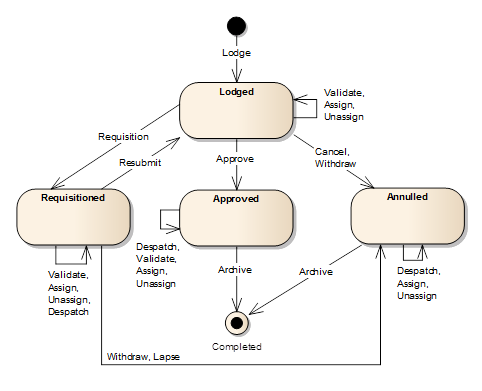

Application Lifecycle
Applications can exist in different states as they are processed through SOLA.
To transition an application into a different state you need to trigger an action,
although not every action causes the application to change state. The actions you can
apply to an application are:
- Lodge – This action is triggered when you save a new application for the first time.
The Lodge action causes the application to be assigned the Lodged state.
- Validate – Validates the details of the application and presents the results on the
Validations tab of the Application Details screen. To validate an application, use the
Validate tool in the Application Details toolbar.
- Assign – Assigns the application to the nominated user. Triggered from the
Application Assignment screen.
- Un-assign – Un-assigns the user currently assigned to the application. Triggered
from the Application Assignment screen.
- Requisition – An application may be requisitioned when further information is
required from the applicant or the agent using the Requisition tool in the Application
Details toolbar. The Requisition action transitions the application into the Requisitioned
state effectively placing it on hold until the additional information is received. The
Requisition tool is only available when the application is in a Lodged state and is
assigned to a user.
- Resubmit – Once the applicant or agent supplies the necessary information, the
application can be resubmitted for further processing using the Resubmit tool in the
Application Details toolbar. This tool is only available when the application is in a
Requisitioned state and is assigned to a user.
- Withdraw – Applicants and/or agents can request the application to be withdrawn
prior to approval. To withdraw an application, use the Withdraw tool in the Application
Details toolbar. The Withdraw action transitions the application into the Annulled state.
The Withdraw tool is available when the application is in a Lodged or Requisitioned
state and is assigned to a user.
- Lapse – Applications that remain requisitioned for an extended period without
response from the applicant or agent may lapse. To lapse an application, use the Lapse
tool in the Application Details toolbar. The Lapse action transitions the application
into the Annulled state. The Lapse tool is only available when the application is in
a Requisitioned state and is assigned to a user.
- Cancel – Applications that are created by mistake, have become invalid or are
rejected following assessment can be cancelled at the discretion of the land
administration agency using the Cancel tool in the Application Details toolbar.
The Cancel action transitions the application into the Annulled state. The Cancel
tool is only available when the application is in a Lodged state.
- Approve – Following assessment of the application and completion of all services
(completion or cancellation), the application may be approved using the Approve tool in
the Application Details toolbar. The Approve action executes the approve business rules
for the application and transitions it into the Approved state if the rule checks are
successful. The Approve tool is only available when the application is in a Lodged state,
is assigned to a user and all services for the application are in either a Completed
or Cancelled state.
- Dispatch – Notifications (e.g. emails, letters and telephone calls) to the
applicant or agent can be noted against the application using the Dispatch tool in the
Application Details toolbar. Where practical, the notification should also be attached
to the application as a document for future reference. The Dispatch tool is only
available when the application is in an Approved, Requisitioned or Annulled state.
- Archive – When all processing is complete and the appropriate notifications
dispatched, the application can be completed using the Archive tool in the Application
Details toolbar. The Archive action transitions the application into the Completed state.
The Archive tool is only available when the application is in an Approved or
Annulled state.
The following state transition diagram illustrates the Application Lifecycle and the effect
different actions have on application state.

Also See